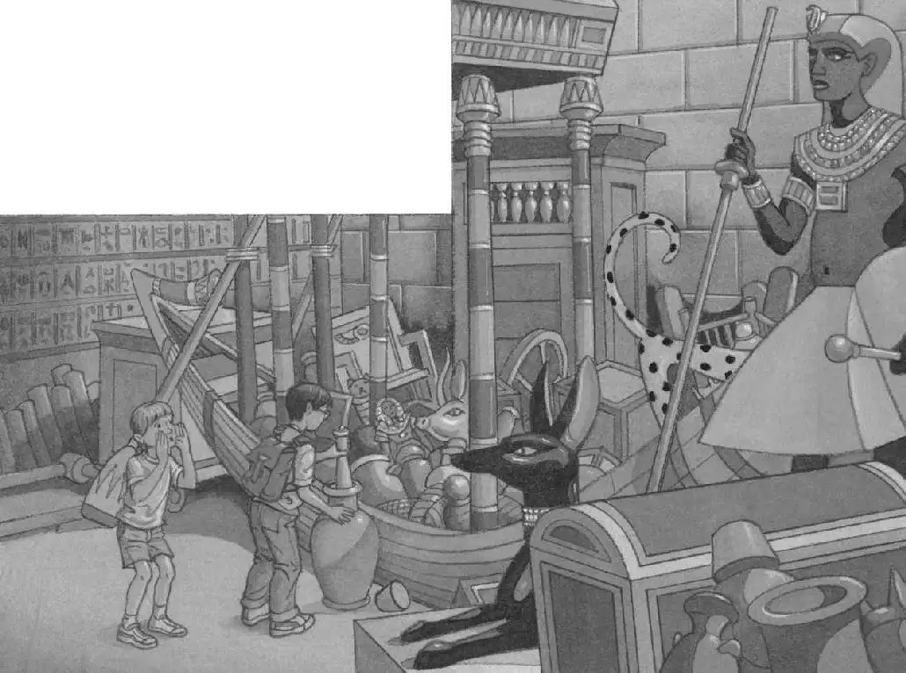

Jack put the scepter and his notebook and pencil into his pack. The ghost-queen seemed so kind and gentle. He wasn’t afraid of her at all anymore.
Jack and Annie followed her deeper into the pyramid. Finally they came to some stairs.
“The STAIRS!” said Jack and Annie together.
The ghost-queen floated up the stairs.
Jack and Annie followed.
The ghost-queen floated right through a wooden door.
Jack and Annie pushed on the door. It opened slowly. They stepped into a cold, drafty room.
The ghost-queen was nowhere in sight.
Dim torchlight lit the huge room. It had a very high ceiling. On one side was a pile of tables, chairs, and musical instruments.
On the other side of the room was a small wooden boat.
“The BOAT!” said Jack.
“What’s it doing inside Queen Hutepi’s pyramid?” asked Annie.
“Maybe it’s supposed to carry her to the Next Life,” said Jack.
Jack and Annie went over to the boat. They looked inside it.
The boat was filled with many things—gold plates, painted cups, jeweled goblets, woven baskets, jewelry with blue stones, and small wooden statues.
“Look!” said Jack. He reached into the boat and lifted out a clay jug.
“The JUG!” said Annie.
Jack looked inside the jug. “Something’s in here,” he said.
“What is it?” asked Annie.
Jack felt inside the jug. “It feels like a big napkin,” he said.
“The FOLDED CLOTH!” said Annie.
Jack reached into the jug and pulled out the folded cloth. It was wrapped around an ancient looking scroll.
Jack slowly unrolled the scroll. It was covered with wonderful hieroglyphs.
“The Book of the Dead!” whispered Annie. “We found it.”
“Oh, man.” Jack traced his finger over the scroll. It felt like very old paper.
“Queen Hutepi!” called Annie. “We have it! We found your Book of the Dead!”
Silence. “Queen Hutepi!”
A door on the other side of the chamber creaked open.
“Maybe she’s in there,” said Annie.

Jack’s heart was pounding. Cold air was coming through the open doorway.
“Come on,” said Annie.
“Wait—”
“No,” said Annie. “She’s waited thousands of years for her book. Don’t make her wait anymore.”
Jack put the ancient scroll into his backpack. Then he and Annie slowly started to cross the drafty room.
They came to the open door. Annie went through first.
“Hurry, Jack!” she said.
Jack stepped into the other room. It was nearly bare, except for a long gold box. The box was open. Its cover was on the floor.
“Queen Hutepi?” called Annie.
Silence.
“We found it,” said Annie. “Your Book of the Dead.”
There was still no sign of the ghost-queen.
The gold box glowed.
Jack could barely breathe. “Let’s leave the scroll on the floor and go,” he said.
“No. I think we should leave it in there,” said Annie. She pointed to the gold box.
“No,” said Jack.
“Don’t be afraid,” said Annie. “Come on.”
Annie took Jack by the arm. They walked together across the room to the glowing gold box.
They stopped in front of the box and peered inside.